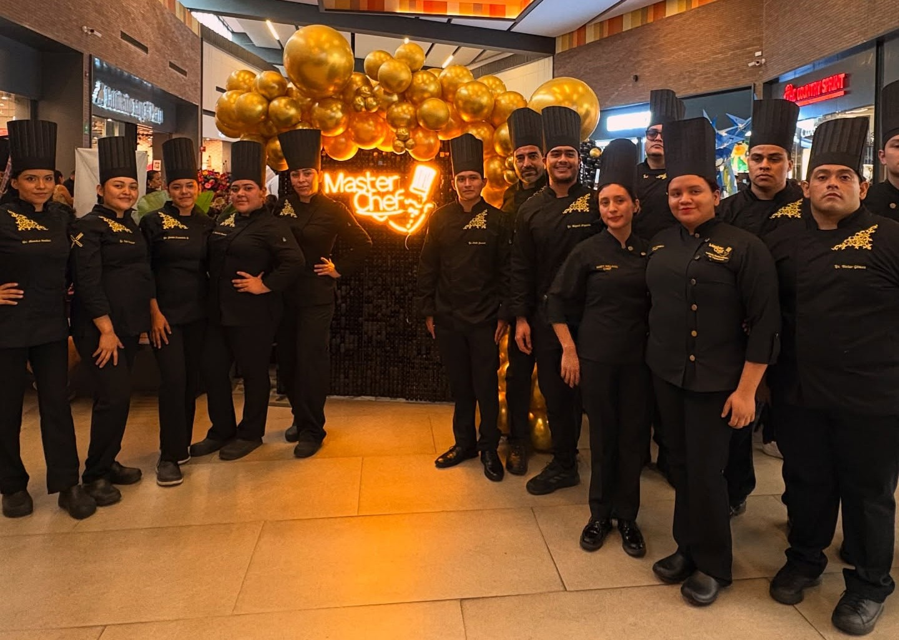
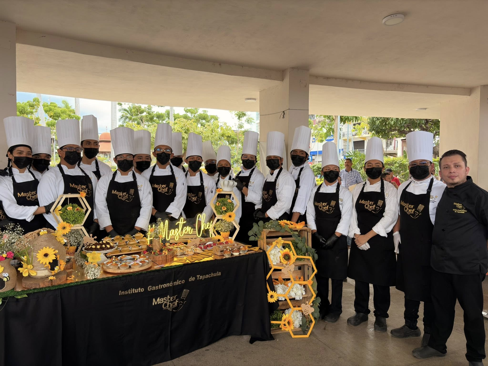

Galería



Formamos a los mejores talentos en gastronomía con técnicas modernas y tradición culinaria.
En Master Chef Tapachula, creemos que la gastronomía es mucho más que cocinar: es una forma de arte, creatividad y expresión cultural. Nuestra institución nace con el propósito de formar profesionales apasionados por el mundo culinario, brindándoles las herramientas, conocimientos y experiencia necesarios para destacar en la industria gastronómica.
Uno de los pilares de nuestro programa es su enfoque altamente práctico. Desde el inicio, los estudiantes trabajan directamente en cocina, donde desarrollan técnicas, disciplina y creatividad. Dentro de nuestra formación destacan materias que combinan conocimiento y arte culinario. Proporcionando áreas que permiten a los alumnos experimentar y perfeccionar su talento.

Formación profesional diseñada para quienes desean convertir su pasión por la cocina en una carrera.
La licenciatura tiene una duración de 3 años con sistema cuatrimestral, ofreciendo una preparación intensiva
enfocada en técnicas culinarias, creatividad gastronómica y desarrollo profesional.
Contamos con modalidad escolarizada y semi escolarizada para adaptarnos a los tiempos de nuestros estudiantes.
RVOE: PSU-218/2014
Programa ideal para quienes desean adquirir habilidades profesionales en cocina en un tiempo corto.
Tiene una duración de 6 meses divididos en 3 módulos, donde los alumnos desarrollan
técnicas culinarias fundamentales, preparación de platillos y organización en cocina profesional.
Clases: 2 días a la semana.
Aprende el arte de la repostería y la panadería con técnicas modernas y tradicionales.
Este programa tiene una duración de 5 meses, estructurado en 5 módulos donde
los estudiantes desarrollan habilidades en preparación, decoración y presentación de postres.
Clases: 1 vez por semana.
Diseñado especialmente para jóvenes que desean iniciarse en el mundo de la gastronomía de forma divertida
y educativa. Durante 6 meses los estudiantes aprenden técnicas básicas de cocina,
higiene en alimentos y creatividad culinaria.
El programa está organizado en 7 módulos con una clase a la semana.